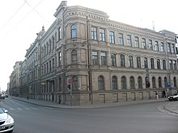

Apraksts
Rīgas Valsts tehnikums, saīsinājumā RVT, ir mācību iestāde Rīgā.
Šī mācību iestāde dibināta 1919. gada 29. decembrī.
Rīgas Valsts tehnikumā var iegūt nepieciešamās zināšanas, prasmes un iemaņas atbilstoši profesiju standartiem un esošajām kvalifikācijas prasībām.
RVT mācās vairāk nekā 2500 audzēkņu. Tehnikumā ir deviņas nodaļas un četras struktūrvienības reģionos. Tehnikumu absolvējuši vairāk nekā 35000 speciālisti.
Nodaļas
Rīgas valsts tehnikums piedāvā daudzas mācību nodaļas:
Auto nodaļa, Datorikas nodaļa, Drukas un mediju tehnoloģiju nodaļa, Dzelzceļa nodaļa,
Enerģētikas nodaļa, Kokapstrādes nodaļa, Komercdarbības nodaļa, Ķīmijas tehnoloģijas nodaļa, Mašīnbūves nodaļa